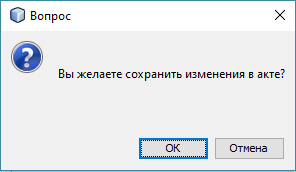
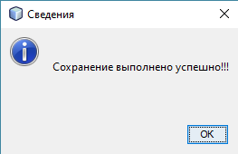

Описание операции "Сохранить акт"
Операция "Сохранить акт" предназначена для сохранения изменений, выполненных пользователем в полях ввода
параметров акта.
Вызов операции осуществляется путем выбора соответствующего пункта меню или на пенали управления.
Когда пользователь выбрал операцию "Сохранить акт", приложение попросит подтвердить операцию сохранения:

При успешно выполненной операции сохранения приложение оповестит об этом:
